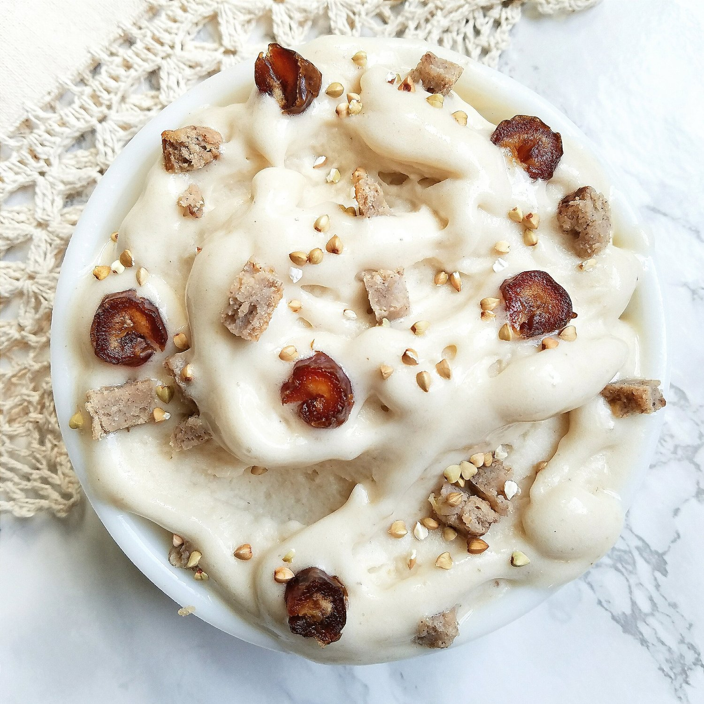
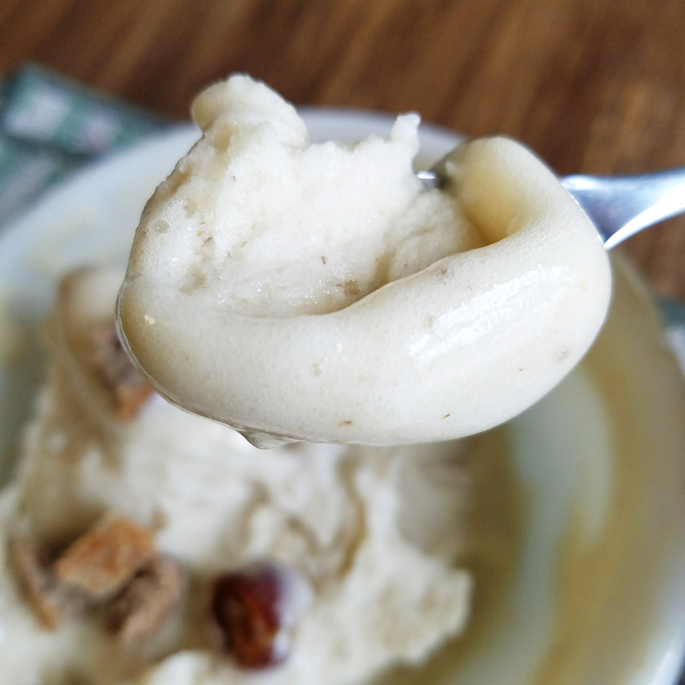

Salted Caramel Banana Ice Cream (vegan, gluten free)


Take a gander at this thick, salted caramel banana ice cream. This sweet and salty ice cream is a very easy, whole foods alternative to high fat, refined sugar-packed products on the shelves. It is naturally vegan, gluten free, nut free, low fat, and oh-so satisfying.
I think my blog is just becoming "The Nice Cream Diaries" based on the abundance of banana ice cream posts in the last few weeks. Proof: hey. yo. wassup. yeah. It's just like...there are so many pros to banana ice cream and I can't find any cons! Other than...you know...running to the store 3 times a week with a banana emergency because you're consuming 4-5x more bananas than normal. But really...with the hot season now, this is so satisfying and a cheaper alternative to dairy free ice creams that are loaded with sugar. I love the whole foods aspect of it as well as how quick it is to make!
This...is definitely my favorite variety. I've made this a couple times before, but wow this one really solidified it for me. My second favorite is the mango banana ice cream kind because of how thick it is! This Salted caramel banana ice cream is thick, very sweet, and unique because of the hint of salt! I don't know about you, but I've always preferred vanilla ice cream over chocolate; this really captures the vanilla taste with an oomph of caramel coming from dates.
Be sure to use soft dates for this! There's nothing worse than old, solid dates that won't blend and just make chunky hard chunks. The double use of "chunk" is totally necessary. I totally discriminate against chunks in ice cream. If you're unfortunate enough to only have solid dates, you can soak them in warm water for 3-4 hours before you want to blend them and that will help some! But I really recommend getting huge, soft dates for a true caramel experience. I also use a touch of toffee stevia drops, but it is not 100% necessary, just recommended.
I topped my ice cream with more chopped dates (also recommended), buckwheat groats for a little crunch, and some of the chai banana bread I recently posted! What would you add on top?
If you haven't had banana ice cream yet and you're stuck deciding what kind to make, THIS ONE! Decision made. Let me know what you think of this low fat, whole foods ice cream option. Remember that it is 100% vegan, gluten free, nut free, and there's no added sugar! So enjoy it and its magic. :)
Salted Caramel Banana Ice Cream
-
4 frozen bananas
-
1/4 cup soft dates (40 g)
-
pinch of salt
-
4-5 english toffee stevia drops(Optional)
In a food processor or high speed blender, add your ingredients. Then just blend! One or two times, scrape down the sides to make sure everything is getting blended evenly. This may take a while to blend, but be patient! Eventually it will be thick and creamy and so delicious.